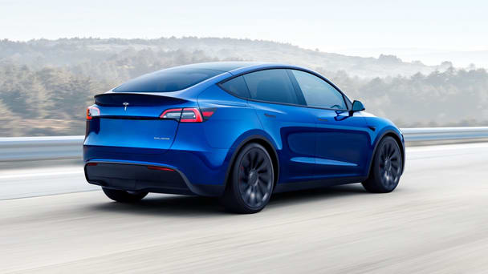
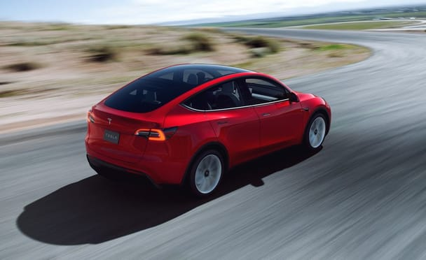
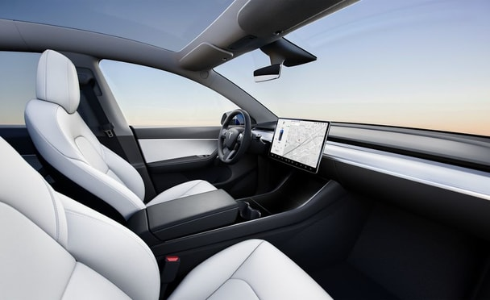

- Overview
- What's New for 2022?
- EV Motor, Power, and Performance
- Range, Charging, and Battery Life
- Fuel Economy and Real-World MPGe
- Interior, Comfort, and Cargo
- Infotainment and Connectivity
- Safety and Driver-Assistance Features
- Warranty and Maintenance Coverage
Overview
The Tesla Model Y tried to capitalize on the red-hot success of the Model 3, but the all-electric crossover is more fizzle than sizzle. Whereas the Model 3 nails its mission with a handling that dances and impressive range, the 2022 Model Y feels like a lazy effort to appeal to the SUV-buying public. Its handling is less engaging than the 3’s and its cabin—while largely carry-over from the sedan—doesn't do enough to differentiate itself, which serves only to magnify our criticism of both its fit-and-finish and the problems that the all-digital environment creates. It's not entirely without value, though. Its estimated driving range is good compared with rivals such as the Ford Mustang Mach E and the Volkswagen ID.4, and the Long Range trim promises up to 330 miles per charge. Plus, the Tesla is available with an optional third row of seats which is still rare in the world of EVs SUVs.
What's New for 2022?
The Standard Range entry-level model has been discontinued for 2022, making the Long Range the de facto base model. Estimated driving range for the Long Range is up this year, to 330 miles when equipped with the standard 19-inch wheels. Picking the more attractive 20 inchers drops range to a claimed 318 miles per charge. Buying an electric car is all about driving range, and the Long Range and Performance models offer 330 and 303 miles of range, respectively. We'd go with the Long Range, which maximizes driving range while offering plenty of performance. There are few ways to customize your Model Y, and only five colors for the exterior—three of which cost an additional $1000-to- $2000. Those seeking the optional third row of seats can add them for an additional $3000.
EV Motor, Power, and Performance
The Model Y lineup no longer includes a Standard Range cost-leader trim. No loss there; the Model Y's Long Range and Performance models are more compelling than a Standard Range trim anyway. Thanks to a generous Car and Driver reader, we were able to test an all-wheel-drive Long Range, which zipped from zero-to-60 mph in just 4.4 seconds, a mere 0.4 second behind our long-term Model 3 sedan. The Performance model delivered an even quicker 3.6-second blast to 60 mph in our testing. While the Model Y offers impressive acceleration, it doesn't deliver the same level of driving satisfaction as the Model 3. The SUV body creates a higher center of gravity, which dulls the sharp edge of the Model 3's handling, and the Y's ride is considerably rougher over road imperfections as well.
Range, Charging, and Battery Life
The all-wheel-drive Long Range offers 330 miles of range; the Performance model's estimated range drops to 303 miles. But the latter comes with 20-inch wheels, a lowered suspension, a higher top speed (155 mph), quicker claimed acceleration, and a dedicated Track mode.
Fuel Economy and Real-World MPGe
The EPA estimates that the Long Range model is good for 131 MPGe in the city and 117 MPGe on the highway, while the Performance model's fuel economy estimates are 115 MPGe city and 106 MPGe highway. The Long Range model that we tested over our 200-mile highway fuel economy test route recorded just 94 MPGe and an estimated highway driving range of 220 miles, while the Performance model delivered a result of 98 MPGe and 230 miles of driving range. For more information about the Model Y's fuel economy, visit the EPA's website.
Interior, Comfort, and Cargo
The Model Y doesn't come with the larger Model X crossover's complicated Falcon Wing doors; its interior is mostly carryover from the Model 3 sedan. Like that car, it is largely free of buttons and relies mostly on a large infotainment display centered on a simple dashboard. An all-glass roof lends an airy ambience to the cabin but is heavily tinted to avoid roasting occupants in Sun Belt states. The optional third row of seats adds a steep $3000 to the Model Y's price—we can't imagine they'll be spacious enough for adults to ride in comfort.
Infotainment and Connectivity
In the Model Y, almost every function is managed through the large, slim infotainment display that's in the middle of the dashboard. Everything from climate control to the speedometer is shown on this display, which takes some getting used to. The Model Y offers the same entertainment functions as the Model 3, including embedded Netflix, Hulu, and YouTube apps as well as video games perfect for killing time while waiting for the battery to charge at the public charging station. Don't worry, drivers are locked out of using these distractions while the vehicle is moving.
Safety and Driver-Assistance Features
Tesla is known for its very advanced Autopilot semi-autonomous driving system, and the Model Y offers the feature as standard. Even more advanced features such as a self-parking feature and a Summon feature are optional. For more information about the Model Y's crash-test results, visit the National Highway Traffic Safety Administration (NHTSA) and Insurance Institute for Highway Safety (IIHS) websites. Key safety features include:
- Standard automated emergency braking with pedestrian detection
- Standard lane-departure warning with lane-keeping assist
- Available adaptive cruise control with semi-autonomous driving mode
Warranty and Maintenance Coverage
Warranty coverage for the Model Y mirrors that of the Model 3, Model S, and Model X models, which means four years or 50,000 miles of bumper-to-bumper coverage and eight years or 100,000 miles of coverage for the battery and electric motors.
- Limited warranty covers four years or 50,000 miles
- Powertrain warranty covers eight years or 100,000 miles
- No complimentary scheduled maintenance